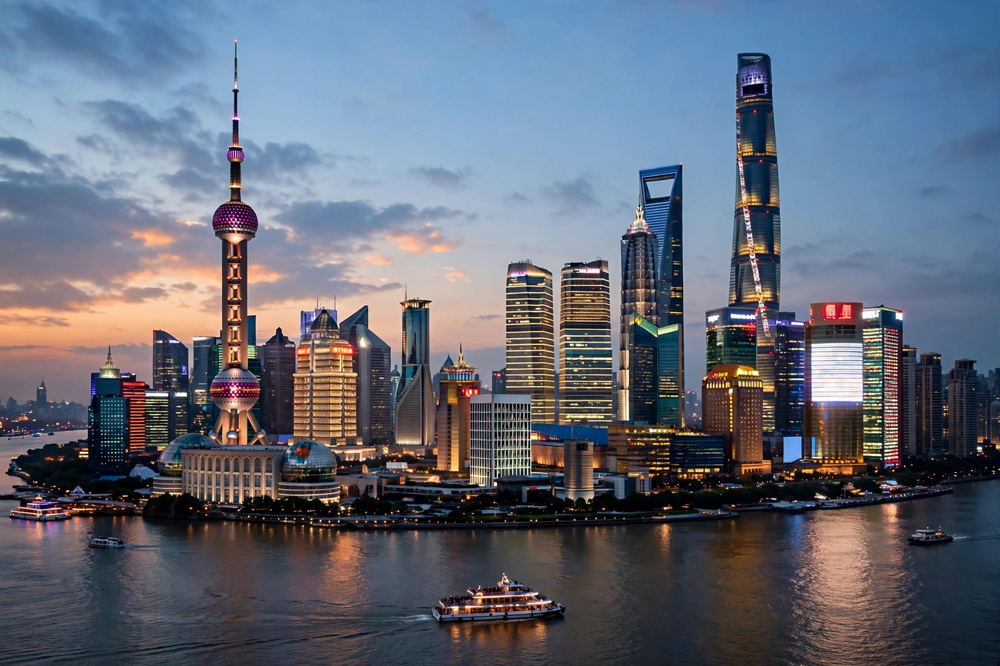

Economy of China

| Currency | Renminbi (yuan; CNY) |
|---|---|
| GDP (nominal) | ≈ US$18–19 trillion (second largest in the world) |
| GDP (PPP) | Largest in the world since 2016 |
| GDP per capita | ≈ US$13,000 (nominal) |
| Main industries | Manufacturing, electronics, steel, automobiles, shipbuilding, services |
| Exports | Largest exporter of goods in the world |
| Central bank | People's Bank of China |
The economy of China is a mixed socialist market economy and the world's second-largest by nominal GDP and the largest by purchasing power parity (PPP). Since the reform and opening up launched by Deng Xiaoping in 1978, China has been among the world's fastest-growing economies, averaging around 9–10% annual growth for three decades and lifting more than 800 million people out of poverty.
History
Under Mao Zedong the economy was centrally planned, with collectivised agriculture and state-owned industry. The reforms after 1978 introduced household farming, township and village enterprises, special economic zones such as Shenzhen, and gradual price and trade liberalisation. China joined the World Trade Organization in 2001, after which exports and foreign investment surged, making it the "world's factory". Since the 2010s growth has moderated as the economy rebalances toward services and domestic consumption, a shift complicated by a property-sector downturn, local government debt and demographic decline.
Sectors
Manufacturing accounts for roughly a quarter of GDP; China produces about half the world's steel and dominates supply chains in electronics, solar panels, batteries and electric vehicles. Services now exceed half of output. Agriculture employs a shrinking share of workers but China remains the largest producer of rice and wheat. State-owned enterprises dominate banking, energy and telecoms, alongside large private firms such as Huawei, Alibaba, Tencent and BYD.
Trade and finance
China is the largest trading nation in goods and holds the world's largest foreign-exchange reserves (over US$3 trillion). The Belt and Road Initiative, launched in 2013, finances infrastructure across Asia, Africa and Europe. The renminbi is managed against a basket of currencies and is not freely convertible on the capital account.